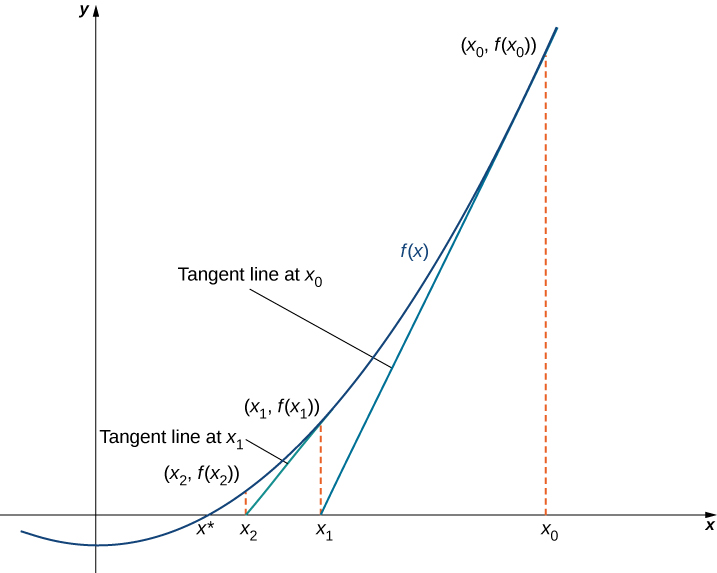
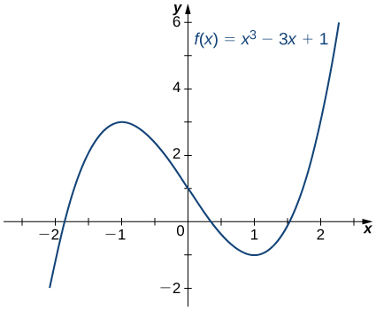
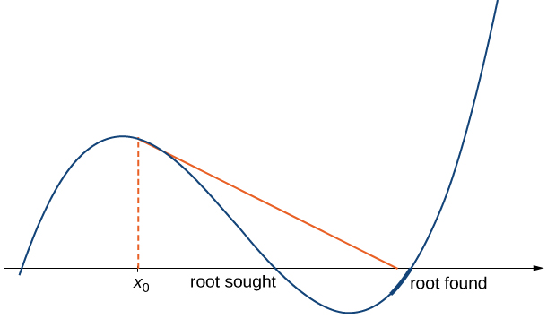

In many areas of pure and applied mathematics, we are interested in finding solutions to an equation of the form For most functions, however, it is difficult—if not impossible—to calculate their zeroes explicitly. In this section, we take a look at a technique that provides a very efficient way of approximating the zeroes of functions. This technique makes use of tangent line approximations and is behind the method used often by calculators and computers to find zeroes.
Describing Newton’s Method
Consider the task of finding the solutions of If is the first-degree polynomial then the solution of is given by the formula If is the second-degree polynomial the solutions of can be found by using the quadratic formula. However, for polynomials of degree or more, finding roots of becomes more complicated. Although formulas exist for third- and fourth-degree polynomials, they are quite complicated. Also, if is a polynomial of degree or greater, it is known that no such formulas exist. For example, consider the function
No formula exists that allows us to find the solutions of Similar difficulties exist for nonpolynomial functions. For example, consider the task of finding solutions of No simple formula exists for the solutions of this equation. In cases such as these, we can use Newton’s method to approximate the roots.
Newton’s method makes use of the following idea to approximate the solutions of By sketching a graph of we can estimate a root of Let’s call this estimate We then draw the tangent line to at If this tangent line intersects the -axis at some point Now let be the next approximation to the actual root. Typically, is closer than to an actual root. Next we draw the tangent line to at If this tangent line also intersects the -axis, producing another approximation, We continue in this way, deriving a list of approximations: Typically, the numbers quickly approach an actual root as shown in the following figure.

The approximations approach the actual root The approximations are derived by looking at tangent lines to the graph of
Now let’s look at how to calculate the approximations If is our first approximation, the approximation is defined by letting be the -intercept of the tangent line to at The equation of this tangent line is given by
Therefore, must satisfy
Solving this equation for we conclude that
Similarly, the point is the -intercept of the tangent line to at Therefore, satisfies the equation
In general, for satisfies
Next we see how to make use of this technique to approximate the root of the polynomial
Finding a Root of a Polynomial
Use Newton’s method to approximate a root of in the interval Let and find and
From , we see that has one root over the interval Therefore seems like a reasonable first approximation. To find the next approximation, we use . Since the derivative is Using with (and a calculator that displays digits), we obtain
To find the next approximation, we use with and the value of stored on the calculator. We find that
Continuing in this way, we obtain the following results:
We note that we obtained the same value for and Therefore, any subsequent application of Newton’s method will most likely give the same value for

The function has one root over the interval
Letting let’s use Newton’s method to approximate the root of over the interval by calculating and
Hint
Use .
Newton’s method can also be used to approximate square roots. Here we show how to approximate This method can be modified to approximate the square root of any positive number.
Finding a Square Root
Use Newton’s method to approximate (). Let let and calculate (We note that since has a zero at the initial value is a reasonable choice to approximate
For From , we know that
Therefore,
Continuing in this way, we find that
Since we obtained the same value for and it is unlikely that the value will change on any subsequent application of Newton’s method. We conclude that
We can use Newton’s method to find
Use Newton’s method to approximate by letting and Find and
Hint
For reduces to
When using Newton’s method, each approximation after the initial guess is defined in terms of the previous approximation by using the same formula. In particular, by defining the function we can rewrite as This type of process, where each is defined in terms of by repeating the same function, is an example of an iterative process. Shortly, we examine other iterative processes. First, let’s look at the reasons why Newton’s method could fail to find a root.
Failures of Newton’s Method
Typically, Newton’s method is used to find roots fairly quickly. However, things can go wrong. Some reasons why Newton’s method might fail include the following:
At one of the approximations the derivative is zero at but As a result, the tangent line of at does not intersect the -axis. Therefore, we cannot continue the iterative process.
The approximations may approach a different root. If the function has more than one root, it is possible that our approximations do not approach the one for which we are looking, but approach a different root (see ). This event most often occurs when we do not choose the approximation close enough to the desired root.
The approximations may fail to approach a root entirely. In , we provide an example of a function and an initial guess such that the successive approximations never approach a root because the successive approximations continue to alternate back and forth between two values.

If the initial guess is too far from the root sought, it may lead to approximations that approach a different root.
When Newton’s Method Fails
Consider the function Let Show that the sequence fails to approach a root of
For the derivative is Therefore,
In the next step,
Consequently, the numbers continue to bounce back and forth between and and never get closer to the root of which is over the interval (see ). Fortunately, if we choose an initial approximation closer to the actual root, we can avoid this situation.
The approximations continue to alternate between and never approach the root of
For let and find and
Hint
Use .
From , we see that Newton’s method does not always work. However, when it does work, the sequence of approximations approaches the root very quickly. Discussions of how quickly the sequence of approximations approach a root found using Newton’s method are included in texts on numerical analysis.
Other Iterative Processes
As mentioned earlier, Newton’s method is a type of iterative process. We now look at an example of a different type of iterative process.
Consider a function and an initial number Define the subsequent numbers by the formula This process is an iterative process that creates a list of numbers This list of numbers may approach a finite number as gets larger, or it may not. In , we see an example of a function and an initial guess such that the resulting list of numbers approaches a finite value.
Finding a Limit for an Iterative Process
Let and let For all let Find the values Make a conjecture about what happens to this list of numbers as If the list of numbers approaches a finite number then satisfies and is called a fixed point of
If then
From this list, we conjecture that the values approach
provides a graphical argument that the values approach as Starting at the point we draw a vertical line to the point The next number in our list is We use to calculate Therefore, we draw a horizontal line connecting to the point on the line and then draw a vertical line connecting to the point The output becomes Continuing in this way, we could create an infinite number of line segments. These line segments are trapped between the lines and The line segments get closer to the intersection point of these two lines, which occurs when Solving the equation we conclude they intersect at Therefore, our graphical evidence agrees with our numerical evidence that the list of numbers approaches as
This iterative process approaches the value
Consider the function Let and let for Find Make a conjecture about what happens to the list of numbers as
Hint
Consider the point where the lines and intersect.
Iterative Processes and Chaos
Iterative processes can yield some very interesting behavior. In this section, we have seen several examples of iterative processes that converge to a fixed point. We also saw in that the iterative process bounced back and forth between two values. We call this kind of behavior a -cycle. Iterative processes can converge to cycles with various periodicities, such as (where the iterative process repeats a sequence of four values), 8-cycles, and so on.
Some iterative processes yield what mathematicians call chaos. In this case, the iterative process jumps from value to value in a seemingly random fashion and never converges or settles into a cycle. Although a complete exploration of chaos is beyond the scope of this text, in this project we look at one of the key properties of a chaotic iterative process: sensitive dependence on initial conditions. This property refers to the concept that small changes in initial conditions can generate drastically different behavior in the iterative process.
Probably the best-known example of chaos is the Mandelbrot set (see ), named after Benoit Mandelbrot (1924–2010), who investigated its properties and helped popularize the field of chaos theory. The Mandelbrot set is usually generated by computer and shows fascinating details on enlargement, including self-replication of the set. Several colorized versions of the set have been shown in museums and can be found online and in popular books on the subject.
The Mandelbrot set is a well-known example of a set of points generated by the iterative chaotic behavior of a relatively simple function.
In this project we use the logistic map
as the function in our iterative process. The logistic map is a deceptively simple function; but, depending on the value of the resulting iterative process displays some very interesting behavior. It can lead to fixed points, cycles, and even chaos.
To visualize the long-term behavior of the iterative process associated with the logistic map, we will use a tool called a cobweb diagram. As we did with the iterative process we examined earlier in this section, we first draw a vertical line from the point to the point We then draw a horizontal line from that point to the point then draw a vertical line to and continue the process until the long-term behavior of the system becomes apparent. shows the long-term behavior of the logistic map when and (The first iterations are not plotted.) The long-term behavior of this iterative process is an -cycle.
A cobweb diagram for is presented here. The sequence of values results in an -cycle.
Let and choose Either by hand or by using a computer, calculate the first values in the sequence. Does the sequence appear to converge? If so, to what value? Does it result in a cycle? If so, what kind of cycle (for example,
What happens when
For and calculate the first sequence values. Generate a cobweb diagram for each iterative process. (Several free applets are available online that generate cobweb diagrams for the logistic map.) What is the long-term behavior in each of these cases?
Now let Calculate the first sequence values and generate a cobweb diagram. What is the long-term behavior in this case?
Repeat the process for but let How does this behavior compare with the behavior for
Key Concepts
Newton’s method approximates roots of by starting with an initial approximation then uses tangent lines to the graph of to create a sequence of approximations
Typically, Newton’s method is an efficient method for finding a particular root. In certain cases, Newton’s method fails to work because the list of numbers does not approach a finite value or it approaches a value other than the root sought.
Any process in which a list of numbers is generated by defining an initial number and defining the subsequent numbers by the equation for some function is an iterative process. Newton’s method is an example of an iterative process, where the function for a given function
For the following exercises, write Newton’s formula as for solving
For the following exercises, solve using the iteration which differs slightly from Newton’s method. Find a that works and a that fails to converge, with the exception of
with
fails, works
with
What is the value of for Newton’s method?
For the following exercises, start at
a. and
b.
Compute and using the specified iterative method.
a. b.
a. b.
a. b.
a. b.
For the following exercises, solve to four decimal places using Newton’s method and a computer or calculator. Choose any initial guess that is not the exact root.
choose
For the following exercises, use Newton’s method to find the fixed points of the function where round to three decimals.
on
Newton’s method can be used to find maxima and minima of functions in addition to the roots. In this case apply Newton’s method to the derivative function to find its roots, instead of the original function. For the following exercises, consider the formulation of the method.
To find candidates for maxima and minima, we need to find the critical points Show that to solve for the critical points of a function Newton’s method is given by
What additional restrictions are necessary on the function
We need to be twice continuously differentiable.
For the following exercises, use Newton’s method to find the location of the local minima and/or maxima of the following functions; round to three decimals.
Minimum of
Minimum of
Minimum of
Maximum of
Maximum of
Maximum of
Minimum of closest non-zero minimum to
Minimum of
For the following exercises, use the specified method to solve the equation. If it does not work, explain why it does not work.
Newton’s method,
Newton’s method,
There is no solution to the equation.
Newton’s method, starting at
Solving starting at
It enters a cycle.
For the following exercises, use the secant method, an alternative iterative method to Newton’s method. The formula is given by
Find a root to accurate to three decimal places.
Find a root to accurate to four decimal places.
Find a root to accurate to four decimal places.
Find a root to accurate to four decimal places.
Why would you use the secant method over Newton’s method? What are the necessary restrictions on
For the following exercises, use both Newton’s method and the secant method to calculate a root for the following equations. Use a calculator or computer to calculate how many iterations of each are needed to reach within three decimal places of the exact answer. For the secant method, use the first guess from Newton’s method.
Newton: iterations, secant: iterations
Newton: three iterations, secant: six iterations
Newton: five iterations, secant: eight iterations
In the following exercises, consider Kepler’s equation regarding planetary orbits, where is the mean anomaly, is eccentric anomaly, and measures eccentricity.
Use Newton’s method to solve for the eccentric anomaly when the mean anomaly and the eccentricity of the orbit round to three decimals.
Use Newton’s method to solve for the eccentric anomaly when the mean anomaly and the eccentricity of the orbit round to three decimals.
The following two exercises consider a bank investment. The initial investment is After years, the investment has tripled to
Use Newton’s method to determine the interest rate if the interest was compounded annually.
Use Newton’s method to determine the interest rate if the interest was compounded continuously.
The total cost for printing books can be given by the equation Use Newton’s method to find the break-even point if the printer sells each book for
Key terms
iterative process process in which a list of numbers is generated by starting with a number and defining for
Newton’s method method for approximating roots of using an initial guess each subsequent approximation is defined by the equation